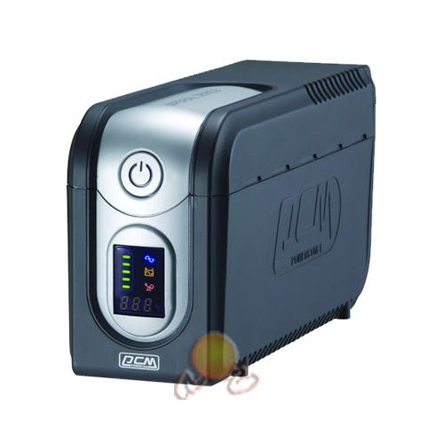

Uzun bir süreden sonra döndüm tekrar ağ temelleri alanıma. Geçtiğimiz yaz okulunda aldım Ağ Temelleri dersimi. 2. sınıfa yeni geçmiş olduğumdan 3. sınıfın ikinci dönemine ait olan bu ders, gerçeği söylemek gerekirse çok zorladı beni. Kısa sürede o kadar çok teknik konuyu öğrenmek, uygulamaya geçirmek ve sonrasında da sınavda çıkabilecek türde inceliklerini bellemek ciddi anlamda yordu hepimizi. Yaz okulundan sonra tekrar çalıştım bu derse. Bu sefer dersi geçmek için değil; cidden öğrenmek için. Şimdi sizlere yönlendiriciler hakkında öğrendiklerimi aktaracağım.
Bilgisayar ağları denildiğinde akla gelecek ilk şey paylaşımdır. İki ya da daha çok bilgisayarın birbiriyle bilgi, program ya da herhangi bir donanımı paylaşmasını amaçlamaktadır bilgisayar ağları.
7 katmandan oluşan OSI ağ modeline göre ağa bırakılan veri, uygulama katmanı ile fiziksel katman arasındaki yolculuğu sonucunda bir bilgisayardan diğer bir bilgisayara ya da bir ağdan başka bir ağa iletilebilir. Fakat şöyle bir ince nokta vardır ki; bir bilgi ağa bırakıldığında göndericiden alıcıya direkt gidemez. Gönderilmesi sırasında üzerinde uygulanması gereken temel prosedürler vardır ki biz bunlara protokol diyoruz. Verilerin bir serverdan bir terminale (alıcı bilgisayar) gönderilmesi sırasında yerel alan ağlarında switch ve hub kullanılıyorken; geniş alan ağlarında (WAN) routerlar (yönlendirici) kullanılmaktadır.
Yönlendirici (Router) Nedir?
Yerel ağlardan gelen paketlerin yollarının belirlenmesi ve paketlenmelerinde görev alan temel birimlere yönlendirici denilmektedir. Bu sayede yerel alan ağlarını birbirine bağlıyor iken; geniş alan ağlarının da bağlantı noktalarını oluşturmaktadırlar.

Yönlendiricilerin Görevleri Nelerdir?
Yol Seçmek (Routing): Yönlendiriciler kendilerine bağlı olan ağ elemanlarının ağ adreslerini bünyesinde bulunan routing tablolarında tutmaktadır. Kendisine gelen verinin nereye gönderileceğini öğrenen yönlendirici, bu adresi routing tabloları ile kıyaslayarak, hangi portu kullanarak göndereceğine karar verir.
Paket Filtreleme: Bu görev, IP adresleme, servis ve protokole göre bilgi transferini kontrol etmektir. Bu kontroller ACL denilen erişim listeleri ile yapılmaktadır. ACL, verinin geldiği, gönderileceği ya da gönderilmesi sırasında kullanılacak protokollere kadar kısıtlamalar yapabilmektedir.
Yönlendirici Güvenliği 4 Ana Başlık Altında İncelenebilir:
- Yönlendirici cihazının güvenliği
- Yönlendirici cihazla ağ güvenliği
- Sistem Takibi
- Sisteme güvenlik testleri uygulamak.
Türkiye’de öncü ağ şirketi CISCO üzerinden anlatacağım sizlere güvenlik konusunu. Bölüm olarak da CISCO üzerinden aldık bu dersi, bu yüzden bu sistemde anlatmak daha kolayıma gidiyor açıkçası.

Yönlendirici Cihazın Güvenliği
Öncelikle yönlendiriciler ağa bağlı birer donanım elemanı olduklarından dolayı kendi güvenliklerinin sağlanmış olması gerekmektedir. Cihazın güvevliğini şu alt başlıklarda inceleyebiliriz:
Fiziksel Güvenlik: Öncelikle yapmanız gereken şey yönlendiricilerin olduğu odanın kapısını kilitli tutmak ve yetkililer dışındaki kişileri bu odalara almamaktır. Daha sonra, oda çok fazla elektronik ve manyetik alan içerisinde olmamalıdır. Eğer yönlendiriciler için ayrılacak bir odanız yok ise; yönlendiricilerinizi kilitli dolaplarda muhafaza etmeniz de iyi bir güvenlik yöntemidir. Yönlendiricinin bulunduğu odaya gelen elektriğin de kesilmemesi çok önemlidir. Bu sorun için, UPS dediğimiz; elektrik kesintisi anında elektrik sinyalleri üreten donanım birimleri kullanılabilir. Yönlendricinizin yakınlarında da IP ya da şifre gibi güvenlik bilgilerini bulundurmamanız güvenliğiniz açısından iyi olacaktır.

Yönlendiriciye Erişim Hakları: Yönlendiriciyi kimin, ne şekilde kullanacağı kesin bir şekilde belirlenmelidir ki herhangi bir sorun yaşandığında, altından kalkılması kolay olsun.
Genellikle yönlendiricilere kullanıcı ve yönetici olmak üzere iki çeşit erişim hakkı bulunmaktadır. Eğer ki kullanıcı hesabına sahip iseniz sadece belirli kontrolleri yapabiliyor iken; yönetici modunda giriş yapabiliyorsanız, donanım cihazlarının konfigürasyonlarını da yapabilirsiniz. Her iki erişimde de 15 seviyeli erişim mekanizmasıyla desteklenen ve üç adet erişim seviyesine sahip olan bir yapı üzerinde çalışılmaktadır.
1. Seviyede, yalnızca enable, disable, help ve logout komutları çalışabilmektedir. 2. Seviyede, kullanıcı modundaki komutlar (router>) çalışmaktadır. 15. Seviyede, exec modu (router#) denilen yönetici komutları çalışmaktadır.
Eğer ki farklı komutları, farklı seviyelerde kullanmak istiyorsak; belirli ayarlamalar ile bunları belirleyebilirsiniz. Örneğin yönetici, kullanıcıya ping komutunu serbest bırakıyor iken snmp-server community komutunu kullanmasını istemiyor olabilir. Buna göre ayarlamaları server hesabından yapabilmektedir.
Şifrelerin Güvenliği: Günümüzü düşündüğümüzde hack dediğimiz kırma işlemleri genel olarak şifre tahmini ile yapılmaktadır. Bu sebepledir ki şifre seçimimize büyük önem vermeliyiz. CISCO yönlendiricilerinde kullanıcı adı ve şifrenin konfigürasyon dosyasında açık olarak görünmesini engellemek için; “service password-encription” komutu kullanılmaktadır. “enable password” çok fazla zayıf bir algoritma olduğundan dolayı bu seçenek kaldırılmalıdır. Bunun yerine MD-5 tabanlı algoritma ile şifreleme yapan “enable secret” komutu kullanılmalıdır.
Erişim Protokollerinin Güvenliği: Yönlendiricilere, konsol portu yardımı ile ulaşılır. Bunun sağlanabilmesi için de fiziksel güvenlik sağlam olmalıdır. HTP, Telnet, TFTP, SSH ve FTP gibi erişim yöntemleri kullanıldığında, TCP/IP protokolünün sahip olduğu eksikliklere karşı önlem alınması gerekmektedir. Alınması gereken önlemleri şu şekilde sıralayabiliriz:
Belirli IP’lerin Cihaza Erişimine İzin Vermek: Bu işlemde cihazlara yalnızca önceden belirlenmiş olan IP adreslerine sahip kullanıcılar ulaşabilir. Bunu da access-list dediğimiz ulaşım listesi aracılığı ile yapabiliriz.

Örneğin; CISCO IOS’de yalnızca 200.100.172.4 ve 200.100.172.5 IP’lerinin erişimine izin verelim ve diğer IP’ler engellensin. Ulaşım adresimiz aşağıdaki gibi olacaktır:
access-list 7 permit 200.100.17.4
access-list 7 permit 200.100.17.5
access-list 7 deny any log
HTTP Erişimi: HTTP protokolü, web arayüzünü kullanarak İnternet’e erişmemizi sağlar. HTTP 80 numaralı portta kurulmuş bir web sunucusudur. Eğer HTTP erişimine izin verilecek ise belirli IP’lere özgü izin verilmelidir. Yönlendiricilerin güvenliğini düşündüğümüzde, erişim ne kadar kısıtlı olursa o kadar güvenlik sağlanır. Eğer ki yönetim web üzerinden gerçekleşiyorsa sadece yönetici kişinin bileceği port kullanılarak, örneğin “ip http server port 510” komutu ile 510 numaralı portta çalışabilecek şekide ayarlanmalıdır.
Şifrenin Ağda Düz Metin Olarak Görüntülenmesini Engellemek: HTTP, Telnet ve SNMP protokollerinde cihaza erişim sağlanıyor iken; şifre direkt olarak ekranda görüntülendiğinden güvenlik açığı oluşmaktadır. Özellikle hub kullanılan bir ortamda saldırgan, ağ üzerinde dinleme (sniff) yaparak bilgiyi elde etmektedir. Bunu engellemek aşağıdaki yöntemleri izlemek ile mümkündür:
Konsol Kablosunu Yönetici Bilgisayara (server) Çekmek: Eğer ki yönetimi tek bir bilgisayar üzerinden yapıyorsanız; o bilgisayarın com portu üzerinden çekilen bir utp kablo, konsol iletişiminizi sağlayacaktır. Bu sayede erişim tek bir kablo üzerinden sağlanmış olacaktır.
Telnet Yerine SSH Kullanmak: SSH, iletilen veriyi şifrelediğinden; SSH’ a bağlanabilmeyi sağlayan işletim sistemi güncelleştirmelerini yapmalısınız.

Güncel SNMP Versiyonlarını Kullanmak: SNMP 1, şifre doğrulamasını direkt düz metin olarak yapmaktadır; yani SNMP 1’de girdiğiniz şifrenizi düz metin olarak göstermektedir. SNMP 3 ya da 2 kullanmanız sizin için daha güvenli olacaktır; çünkü bu SNMP versiyonları, öz (digest) doğrulama şeması dediğimiz yönetim bilgilerine erişimi kısıtlamaktadır.
Hub Kullanılan Ortamlarda Yönlendiriciye Erişim Yapmamak: Hub bulunan ortamlarda yönlendiriciye mümkün olduğunca erişim yapmamalıyız; eğer illa ki kullanmamız gerekiyor ise Linux/Unix çekirdekli bir sunucu kullanmalıyız. Bunu da direkt kullanarak değil; bu sunucuya bağlanarak yönlendiriciye Telnet üzerinden erişim sağlamalıyız.
Doğrulama Mekanizmalarını Sağlamak: HTTP kullanırken; doğrulama mekanizması (şifre girişi ve girilen şifrenin kontrolü) düz metin olarak sağlanmatadır. Bu yüzden bu kullanım güvenli ve etkili değildir. Doğrulama mekanizması, Radius gibi onay sunucuları kullanılarak yapılabilir.
Acil Durum Erişimini Düzenlemek: Yönlendiriciye bağlanamadığımız durumlarda erişim telefon hattı üzerinden gerçekleşmektedir. Böylesi bir erişimde PPP dediğimiz noktadan nokataya protokoller üzerinde, CHAP doğrulama methodu kullanılmaktadır. Bu method, uçtan uca bağlantılarda uç noktayı engeller, izinsiz yapılacak herhangi bir erişim engellenmiş olur.
Saymış olduğumuz tüm önlemlere rağmen yönlendiriciler ele geçirilebilmektedir. Bu durumun önüne geçmek için de yönlendiricilerin etrafında bir yere, yönlendiricinin hakkı olmayan bir kişi tarafından kullanımı durumunda cezai işlemlerin uygulanacağının duyurulduğu bir yönerge asılmalıdır. Cihaza herhangi bir yerden, herhangi bir kişi tarafından erişim gerçekleştiğinde uyarı mesajı görüntülenmesi de güzel bir güvenlik yöntemidir. Bu mesajı: “banner motd” komutunu kullanarak yapabiliriz. Örneğin; banner motd^C yazdığımızda karşımıza:
------------------------------------------------------------------------
Bu cihaza yetkisiz erisim yasaktir. Erisim bilgileriniz kayitlanmistir.
Unauthorized access to this device is prohibited. All access has been
logged.
------------------------------------------------------------------------^
mesajı gelecektir.
Gereksiz Servisleri Kapatmak: Öncelikle kullanmadığınız yönlendirici servislerinizi kapatmalısınız. Kullanılmayan bilgisayarların bağlı olduğu birimler de aynı şekilde kapatılmalıdır. Hatta bu cihazlara bağlı kişiler hakkında saldırgan kişilere bilgi verebilecek “ finger” servisi de kapatılmalıdır. (no service finger) Aynı şekilde, web sunucularını da yönlendiricinizde açmayınız; kullanmak zorunda olmadığınız durumlarda kapatınız. (no ip http server )
İşletim Sistemi: İşletim sistemi seçiminde dikkate alınması gereken iki nokta vardır: Birincisi donanım uyumluluğu, ikincisi ise güvenlik açıklarıdır. Hangi işletim sistemini kullanırsanız kullanın, güncellemeleri sürekli takip etmeniz yararınıza olacaktır. Bir işletim sisteminin en son sürümü, «en iyi sürümü» demek değildir. Hatta bir sürüm geriden gitmenizi size önerebilirim; çünkü yeni çıkan bir sürümün illa ki eksikleri olacaktır. Güvenlik açısından eksiklerinin kapatılmasını ya da bir başka sürümünün çıkmasını beklemek yararlı olacaktır.
Yönlendirici Cihazla Ağ Güvenliği
Yönlendirici, bulunduğu ağda güvenlik duvarı görevini de üstlenebilmektedir. Bu işlevi yönlendiriciye vermek ya da yönlendiricinin üzerinden almak bizim elimizdedir. Fakat şunu da bilmeliyiz ki bir yönlendiricinin görevi güvenlik değil, yönlendirmedir. Bu iki görev cihaza ağır geleceğinden, performansını olumsuz yönde etkileceyecektir. Güvenlik için, cihaz yerine güvenlik duvarı (firewall) kullanmalıyız.
Yönlendiriciler aracılığı bilgisayarlarımızın karşılaşabileceği tehditlerden korunmak için:
- Riskli portları kapatmalıyız.
- Saldırı tekniklerini bilmeli ve her birine özgü alınması gereken önlemleri almalıyız.
- Yönlendiricilerin gelişmiş ayarlarına hakim olmalıyız.
Riskli Portları Kapatmak: İnternet üzerinden çalışan servisler, bilgi alışverişi yaparken bazı sanal portları kullanmaktadırlar. Örneğin; HTTP , 80 numaralı sanal portu kullanmaktadır. Riskli portların engellendiği bir liste oluşturmanızda yarar vardır.
access-list 101 deny udp any any eq 445
access-list 101 deny tcp any any eq finger
access-list 101 permit ip any any
Yukarıdaki listede 445 numaralı sanal port (UDP portu) erişime kapatılmıştır.
Saldırı Teknikleri: Saldırgan yazılımlar, sisteminize zarar vermek isteyen kişiler tarafından birçok şekilde kullanılmaktadır. Eğer siz bu yöntemlerden haberdar olursanız sisteminiz daha güvenli olacaktır.
IP Spoofing: Kötü amaçlı kişiler tarafından uygulanan en yaygın tekniktir. Bilgi transferi sırasında eğer IP numaranızı saklamıyorsanız çok büyük tehlikedesiniz. Biri sizi izliyor olabilir. Hatta sizin adınıza karşı tarafa bir şeyler gönderiyor ya da karşı taraftan bir şeyler alıyor olabilirler.

Siz bilgi alışverişi yapıyorken IP’lerinizi izleyerek, sizin IP’nizi kendisininmiş gibi göstererek uygulanan bu yöntem neredeyse hiç fark edilmemektedir. Bu yüzden IP’nizin görünmesini engellemelisiniz. (no ip source-route komutu ile)
Rooting Protokolüne Yapılan Saldırılar: Saldırgan, siz yönlendiriciler arasında iletişim halindeyken sizin gönderdiğiniz ya da size gönderilen verilerin birer kopyasını kendisinde saklıyor olabilir. Bu yöntem ile kişisel bilgileriniz yanında kredi kartınızın numarası gibi çok ciddi hasarlara sebep olacak bilgilerinize de ulaşabilmektedir. Hatta iki yönlendirici arasındaki iletişimi de bir anda kesebilir. Bu gibi saldırılardan kurtulmanın yolu genel giden paketleri filtrelemektir.
Giriş – Çıkış Erişim Listeleri: Bahsedilen listelerde, yönlendiriciye iletilen paketlerin kaynak IP’leri ve gidecekleri yönlendiricilerin IP adresleri bulunmaktadır.

Dış ağlardan gelen verilerin kontrollerinin yapılması olayına giriş filtreleme denilmektedir. Bu kontrol işleminde, dışarıdan gelen verinin başında İnternet ortamında kullanılamayacak bilgilerin olup olmadığına bakılır ve eğer var ise kabul edilmezler.
İç ağdan dış ağlardan herhangi birine giden paketlerin kontrolüne ise, çıkış filtreleme denilmektedir. Göndericinin ağ IP aralığında olmayan veri dışarı çıkamaz. Bu sayede kurumun IP adresi üzerinden, dışarıda kullanılabilecek bilgiler saklanmış olur ve güvenlik bir nebze sağlanmış olur.
SYN Saldırıları: Saldırgan kişiler, bu yöntemi şu şekilde kullanmaktadır: Saldırmak istediği ,daha açık bir söylem kullanılması gerekirse, çalışmasını engellemek istediği bilgisayara aynı nitelikteki gereksiz olarak nitelendirilebilecek bağlantı istekleri göndermektedir. Kullanıcı bu istekleri açtığında ağın çalışması yavaşlar ve hatta sistem çok yoğunlaşacağından çalışmaz hale dahi gelebilir.
Smurf Attack: Aynı ağdaki herkese gönderme yöntemi de denilen bu yöntemde amaç, gereksiz trafik yaratmaktır. Saldırgan, hedef bilgisayar tarafından gönderildiğinin sanılması için bu IP’ye ait olan “broadcast ping” leri oluşturur ve herhangi bir başka kullanıcıya gönderir. Gerçekte hiçbir şey göndermeyen bu bilgisayar, karşısındaki kişiler tarafından göndermiş gibi algılanır. Bu olayı “no ip directed-broadcast” komutu ile engelleyebiliriz.
Gelişmiş Ayarlar: Yönlendiricilerin yönetilmesinde kullanılan işletim sistemlerine IOS denir. IOS’lerin bazı gelişmiş sürümlerinde güvenlik kontrollerinin yapılabilmesi için ek ayarlar bulunmaktadır. Bu ek ayarlar sayesinde gelen HTTP paketlerinde istenilen örüntülerin aranması, VPN uygulamaların gibi gelişmiş güvenlik yöntemleri de kullanılabilmektedir.
Sistem Takibi
Ağ cihazlarının güvenliğini sağlamak, kontrollerini yapmak için çeşitli yöntemler kulanılmaktadır. Kontroller genellikle, ağ yönetim istasyonu denilen birden fazla bilgisayar tarafından yapılmaktadır. Bu bilgisayar, SNMP dediğimiz, bilgisayarların ağda kullandıkları doğrulama bilgilerini ve saldırı girişimlerini tutmaktadırlar. Bu yüzden, öncelikli hedef olmaktan kaçınamaz bu ana bilgisayarlar. Bu sebepledir ki gerek yazılım anlamında, gerekse donanımsal açıdan güvenliklerinin sağlanması gereklidir. Sistem şu yöntemler ile sağlanmaktadır:
- Kayıtlama (Logging)
- SNMP
Kayıtlama (Logging): Ağ cihazları, gerçekleşen sistemsel olayları kayıt etmektedirler. Arayüz değişimleri, IP değişiklikleri, giriş-çıkış erişim listeleri gibi güvenlik için büyük önem taşıyan bilgiler cihazlarda tutulmaktadır.
SNMP: Basit Ağ Yönetim Protokolü olan SNMP, yönlendirciler ve server’lar için asla vazgeçilemeyecek bir protokoldür. Bu protokol aracılığı ile bellek ve işlemci kullanımından tutun da trafik istatistiklerine kadar birçok şey hakkında bilgi edinilmektedir.
SNMP kullanılırken şunlara dikkat edilmelidir:
Önceden de söylediğimiz gibi, 1 versiyonunda güvenlik açıkları bulunmaktadır. Bu yüzden 2. ve 3. versiyonlarından birini kullanmanız önerilir.
Read – Only ve Read-Write gibi önemli işlevleri olan komutların SNMP şifreleri özelleştirilmelidir. Birbirinden farklı olması daha iyi olacaktır.
SNMP erişimi özelleştirilmiş (önceden belirlenmiş) IP adreslerine verilmelidir.
Sisteme Güvenik Testleri Uygulamak
Bu yazımın son alt başlığındayız şimdi. Ağımızın bulunduğu kurumun güvenliğinin sürekli kontrol ediliyor olması da güvenliğin yapıtaşlarındandır. Bu işlem için aşağıdaki araçlar kullanılmaktadır:
RAT ( Router Audit Tool): http://www.cisecurity.org/bench_cisco.html adresinden ücretsiz olarak indirebileceğiniz bu program, bir kontrol ve karşılaştırma aracıdır. Karşılaştırmalarda, Cisco marka yönlendiricinin işletim sistemi ve üzerinde yapılan konfigürasyonlar için raporlama da yapabilmektedir.
Tarayıcılar İle Ağı Denetlemek: Nessus gibi tarayıcılar, erişim listelerinin ve IP adreslerinin çalışıp çalışmadığının dışarıdan kontrolünü sağlamakta önde gelen tarayıcılardır. http://www.nessus.org

Doğruluk- Bütünlük Kontrolleri: Cihazın işletim sisteminde ya da IP dizilimlerinde bir hata ya da değişiklik olup olmadığını gösteren bir kontrol tipidir. Bu kontrol, yapılan kontrollerin bir yerde saklanıp yeni yapılanlar ile kontrolü sonucunda gerçekleşir.
Biliyorum, çok uzun bir yazı oldu. Fakat, bu konu öyle ayrıntılı ve önemli bir konu ki ağda çıkacak bir güvenlik açığı bir kurumun bütün bilgilerinin şirket dışına çıkmasına yol açabilir. Bu yüzden, bu konuya önem vermeniz iyi olacaktır. Eğer ki bahsettiğimiz konulardan birinde eksiğiniz var ise bence bu eksiği kapatınız. Bir sonraki yazılarımda UTP, güvenlik duvarı ve VPN gibi konular ile devam edeceğim ağ güvenliği konumuza. Şimdilik görüşmek üzere.
Hoşçakalın.